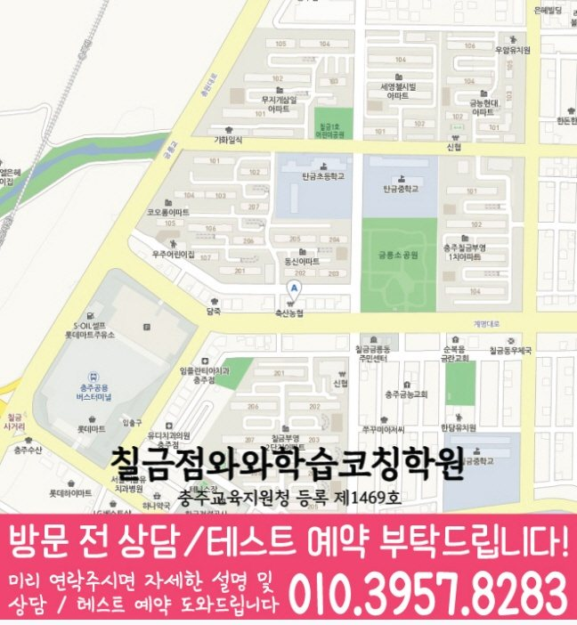

High school Korean · English · Math
칠금동 고등학생 국영수학원
칠금동 고등학생 국영수학원 선택 전 고등 내신 자료, 최근 오답과 과목별 가능 학년, 센터 위치·비용 확인 기준을 안내합니다.
01 Quick answer
칠금동에서 먼저 확인할 내용
칠금동에서 고등학생 국영수학원을 찾는다면 와와학습코칭센터 칠금점의 과목별 가능 학년을 먼저 확인하세요. 제공된 고등학교 참고 자료와 학생의 실제 교재를 대조하고, 학생의 실제 풀이 기록에 맞게 과목별로 무엇을 먼저 보완할지 정하는 순서가 필요합니다.
대표 학생 상황
세 과목의 과제 순서와 오답 복습 시점을 스스로 정리하기 어려운 고등학생


010-6839-8283상담 전 핵심 안내
충청북도 충주시 칠금동에서 고등학생 영어·수학 학원을 찾는 학생을 위해, 현재 실력 진단부터 개념 보완, 유형별 문제풀이, 오답 관리, 시험 대비까지 이어지는 학습 흐름을 안내합니다. 지역 센터는 학생의 목표와 학습 속도를 확인하고, 영어·수학 중심으로 국어·영수 연계 학습까지 코칭하여 학습 기록이 이어지도록 돕습니다. 칠금동 고등학생 국영수학원을 찾는 학부모님께 먼저 드릴 답변은 간단합니다: 현재 성적보다 오답 패턴, 등하원 시간, 과제 지속성을 함께 봐야 합니다. 칠금동에서 비슷한 어려움을 겪는 학생의 상담 흐름을 살펴봅니다.
처음 상담에서 구분할 학습 과제
칠금동 다음 학습 단계에서는 복습 이력을 바탕으로 보완할 단원을 구분합니다. 처음부터 많은 문제를 푸는 방식보다, 개념 이해도·기본기·풀이 습관을 먼저 점검해 학생에게 맞는 학습 순서를 설계합니다.
영어·수학 집중 밸런스. 영어는 문법·어휘·독해 흐름을, 수학은 단원별 개념·유형·오답 원인을 나누어 관리하여 점수 변화의 핵심만 공략합니다.
칠금동 과목별 점검에서는 단원별 이해도를 바탕으로 다음 보완 순서를 정합니다. 독해/문해력, 사고력, 문제 해석력을 키워 영어·수학 학습의 기반이 흔들리지 않도록 함께 잡아줍니다.
국영수를 함께 보려는 부모님이 놓치기 쉬운 부분은 “칠금동 고등학생 국영수학원에서 우리 아이가 세 과목을 모두 따라갈 수 있을까”라는 점입니다. 충청북도 충주시 칠금동 기준으로는 내신 핵심 과목 국어·영어·수학을 한꺼번에 늘리는 계획보다는 최근 풀이에서 멈춘 단원과 원인을 먼저 나눠야 합니다. 고등학생의 최근 시험·과제 자료를 바탕으로 실제 학습 상황을 구체적으로 확인해야 합니다. 칠금동 상담 전에는 최근 범위와 틀린 유형, 과제 완료 시간을 준비해 세 과목의 우선순위를 나눠 보세요. 칠금동 학생에게는 거창한 목표보다 과목별로 지킬 최소 행동과 점검 시점이 먼저 필요합니다.
이해와 실행을 함께 살피는 수업 기준
설명보다 이해를 우선. 학생이 어디에서 멈추는지 질문과 풀이 과정을 통해 확인하고, 막힌 개념을 다시 연결해 끝까지 이해하게 만듭니다.
오답이 쌓이도록 지도. 틀린 이유를 유형화하고 다음 풀이에서 실수하지 않도록 오답 정리 기준과 재학습 루틴을 제공합니다.
칠금동 학습 점검에서는 과제 이행 기록을 바탕으로 반복 오류를 점검합니다. 숙제·복습·시험 전 대비 계획을 점검해 수업이 끝난 뒤에도 꾸준히 학습 변화를 기록할 수 있게 코칭합니다.
칠금동 고등학교 자료를 수업 계획에 반영하는 방법
학교 자료를 대조할 때, 칠금동 고등학교 참고 정보에는 국원고·예성여고·충주여고가 포함됩니다. 학생의 현재 자료를 기준으로 보면, 학교명만으로 수업 가능 여부를 판단하지 않고 센터의 현재 개설 범위를 함께 확인해야 합니다.
상담 전에 정리해 보면, 칠금동 고등학생의 현재 자료를 국어·영어·수학으로 분류하면 시험·교과 범위와 복습할 단원을 더 명확히 볼 수 있습니다. 실제 학습 범위를 확인하면, 학교 일정이 주간 과제에 반영되는지도 함께 확인합니다.
개념 확인부터 오답 복습까지
1. 현재 수준 확인. 학년, 학교 진도, 최근 시험 결과를 바탕으로 부족한 단원과 자주 틀리는 유형을 정밀하게 확인합니다.
2. 개념 정리와 유형 학습. 문제부터가 아니라 핵심 개념을 정리한 뒤, 기본 유형 → 실전 유형 → 변형 문제 순으로 단계적으로 연습합니다.
3. 오답 관리와 실력 피드백. 오답을 단순 재풀이로 끝내지 않고, 틀린 원인(개념/계산/해석/조건 누락)을 분석해 다음 학습 전략을 제시합니다.
4. 시험 대비 로드맵. 시험 범위와 제공된 시험지의 문항 유형에 맞춰 복습 타이밍을 계획하고, 실수 유형과 시간 관리까지 함께 점검합니다.
학년 단계에 맞춘 준비 기준
고1. 칠금동 다음 학습 단계에서는 오답 원인을 바탕으로 보완할 단원을 구분합니다. 학교 진도 속도에 맞춘 커리큘럼으로 기본기-유형적응을 동시에 진행합니다.
고2. 영어는 문장 해석과 독해 흐름을 강화하고, 수학은 유형 반복으로 약한 단원을 집중 보완합니다. 단원별 오답 패턴을 관리해 같은 실수가 반복되지 않게 만듭니다.
고3. 내신과 수능형 문제풀이 전략을 분리해 효율적인 학습 계획을 세웁니다. 시간 관리, 오답 유형 우선순위, 실전 연습 루틴을 통해 점수 변화를 목표로 합니다.
내신·모의고사 대비. 칠금동 고등학생 상담에서는 최근 교재의 풀이 표시를 과목별로 나누어 우선순위를 기록합니다. 문제 풀이 후 피드백을 통해 다음 시험에서 바로 개선되도록 관리합니다.
칠금동 지역 센터(칠금점)는 학생의 현재 학습 상태를 기준으로 영어·수학 중심 학습 방향을 정리하고, 국어·영수 연계 관점까지 고려해 현재 수준에 맞춰 코칭합니다. 상담을 통해 고등학생에게 필요한 로드맵을 자세히 정리합니다.
02 Consultation examples
칠금동 학부모 상담 상황 예시
아래 내용은 실제 고객 후기나 성적 결과가 아니라, 상담에서 확인할 질문을 이해하기 위한 상황 예시입니다.
최근 학교 학습 준비가 한 과목에 치우친 칠금동 고등학생을 가정했습니다. 학부모는 현재 교재와 학교 자료를 바탕으로 국어·영어·수학의 병목을 따로 듣고, 가정에서 확인할 기록을 정리합니다.
칠금동에서 제공된 고등학교 참고 정보인 국원고·예성여고·충주여고의 목록과 학생의 실제 학교 자료를 대조해 질문하는 장면을 예로 들었습니다. 실제 등록 판단 전에는 주소와 통학 시간, 센터별 운영 범위, 학교 시험 자료의 반영 방식을 차례로 확인합니다.
03 FAQ
칠금동 고등학생 국영수학원 자주 묻는 질문
학부모님이 상담 전에 자주 확인하는 내용을 질문과 답변으로 정리했습니다.
칠금동 고등학생 국영수학원 선택 전 학생의 어떤 습관을 살펴야 하나요?
시험 일정은 알고 있지만 실행 가능한 주간 분량을 정하기 어렵다면 최근 교재와 학교 자료를 가져가 보세요. 칠금동 상담에서 집중 과목과 최소 복습량을 구분할 수 있습니다.
국어·영어·수학 과제량은 칠금동 고등학생에게 어떻게 배분하나요?
칠금동 상담에서는 국영수를 함께 관리한다는 표현이 세 과목을 동일하게 다룬다는 뜻은 아닙니다. 학생이 막힌 장면과 시험 일정을 과목별로 확인한 뒤 공통 시간표 안에서 충돌하지 않게 배치합니다.
칠금동 학교별 교과 자료는 어떤 방식으로 확인하나요?
학교명은 상담 준비를 위한 참고 정보입니다. 국원고·예성여고·충주여고 등과 관련한 실제 수업 여부는 학생의 시험 범위표·학교 프린트·수행평가 일정 자료, 센터의 현재 개설 범위와 함께 확인해야 합니다.
칠금동 센터에 문의할 때 주소와 가능 학년을 함께 물어봐야 하나요?
센터마다 운영 조건이 다를 수 있습니다. 실제 방문 위치는 위 센터 확인 정보에서 확인할 수 있습니다. 센터별 교습비 확인 버튼에서 제공 자료를 볼 수 있습니다. 칠금동 상담에서 과목별 가능 학년과 보강 방식을 함께 확인하세요.
04 Continue
칠금동 페이지 이동
카테고리 전체 지역 또는 앞뒤 지역 안내로 이동할 수 있습니다.